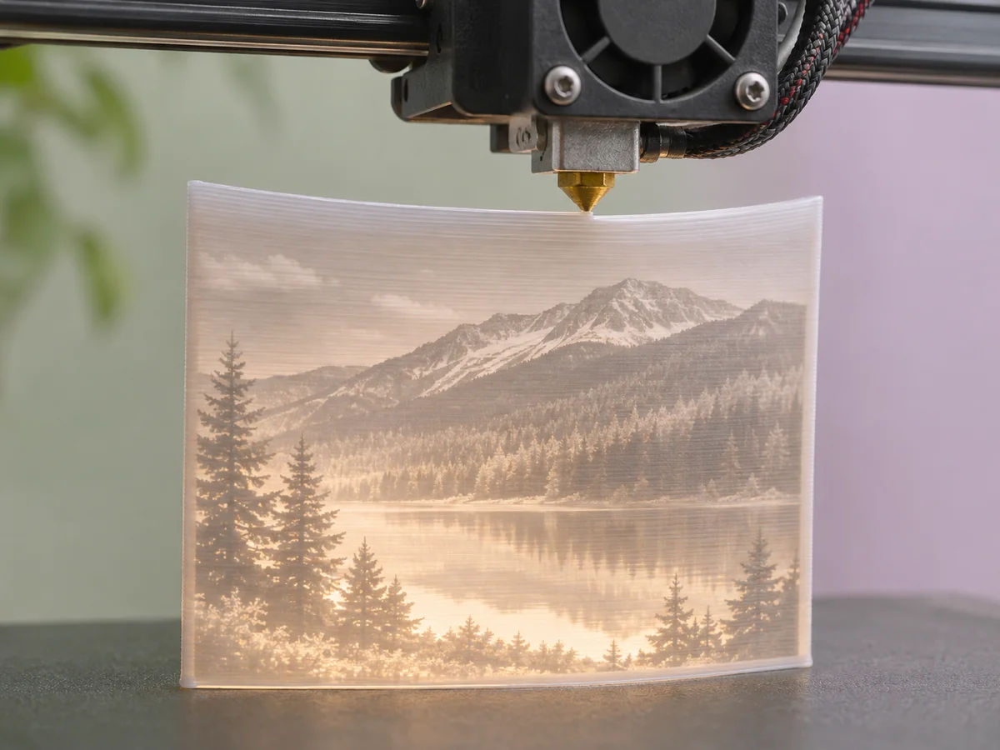
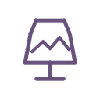
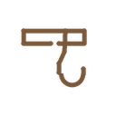
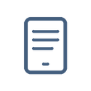
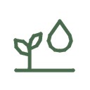

Tallinna Ülikooli ELU projekti kokkuvõte · Sügis 2026
Disainmõtlemine, 3D-modelleerimine ja robootika
Neli rühma lahendasid sügissemestril praktilisi ülesandeid, rakendades disainmõtlemist, 3D-modelleerimist, 3D-printimist ja robootikat. Siit leiad ülevaate nende tööprotsessist, katsetustest ja valminud prototüüpidest.
Tutvu rühmade töödega
Projekti põhieesmärgid
- Kirjeldada disainiprotsessi ja selle alusel luua prototüüp. Iga rühm kasutas Double Diamondi ehk topeltteemandi mudelit ja disainmõtlemise meetodeid, et kirjeldada oma töökäiku kasutajate vajaduste uurimisest kuni praktilise lahenduse prototüübi katsetamiseni.
- Rakendada kohtumistel õpitud töövõtteid. Rühmad kasutasid disainimeetodeid ning valisid oma ülesandele sobivad 3D-modelleerimise, 3D-printimise ja robootika vahendid.
Rühmade projektid
-

Rühm 1 · Valgusdisain ja 3D-print
Litofaanialamp
Värvimuutev valguslahendus, mis aitab mobiilsel noorsootööl üritustel tähelepanu äratada.
-

Rühm 2 · Kasutajauuring ja prototüüpimine
Koolikoti konks
Teisaldatav konks, mis hoiab koolikoti laua juures ning põrandalt eemal.
-

Rühm 3 · Õppedisain ja kasutajaliides
Valt-e
Lugemisseadme prototüüp õpilastele, kes vajavad tekstist arusaamisel tuge.
-

Rühm 4 · Andurid ja automaatika
Siseaia automaatkastmine
Anduritega kastmissüsteem Tallinna Ülikooli siseaia suviseks hoolduseks.